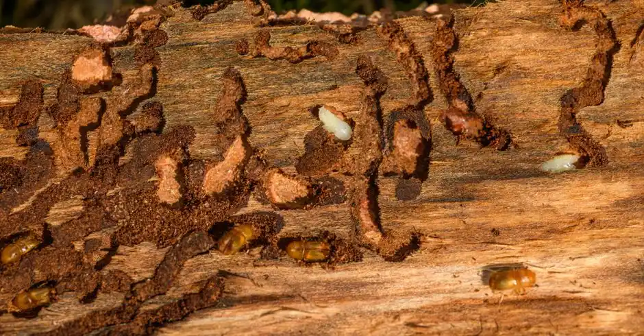
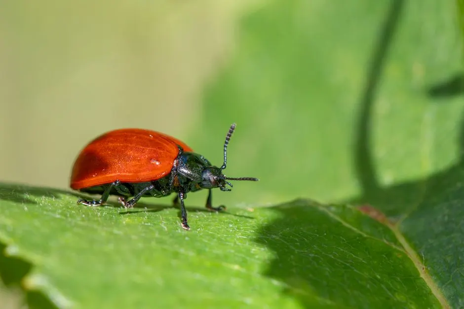

Licensed, insured and built for Riverside County homes
General Pest Control in Corona That Keeps Bugs Out
General Pest Control in Corona means one licensed technician handling the ants, roaches, spiders and rodents that get into local homes. We treat the inside, the perimeter and the yard, then come back on a set schedule so nothing rebounds. If you are searching for residential pest control in Corona CA, we run same-day routes across 92882, 92881 and 92879.
Live phone supportUpfront optionsBacked workmanship
What's included
What Is Included in General Pest Control
Every recurring plan covers the core household pests and the work needed to keep them out. Specialty pests that need different products or longer labor are quoted separately so you are not paying for treatment you do not need.
Interior Crack and Crevice
Bait gel and residual insecticide applied to kitchen, bathroom and utility areas where roaches and ants harbor. We treat the gaps, not the open floor, so kids and pets are not walking through product.
Exterior Perimeter Band
A residual insecticide application around the foundation, entry doors and garage. This is the barrier that stops ants, spiders and roaches from walking in from the yard.
Rodent Bait Stations
Locked stations placed along the fence line, side yards and garage corners. We check and refill them each visit and record activity so you can see whether pressure is rising.
Exclusion and Sealing
Weep holes, dryer vents, utility penetrations and garage door gaps get exclusion mesh and sealants. This is the step that turns a spray into a long-term fix for rodent infestation.
Warranty Re-Treats
If covered pests return between scheduled visits, we come back and re-treat at no charge. Just call 951-257-7625 and we will get you on the next route through your area.
Service overview
What General Pest Control in Corona Covers
General Pest Control in Corona is a scheduled treatment program that knocks down the common household pests living in and around your home, then keeps them from coming back. A technician inspects the kitchen, garage, bathrooms, attic and exterior perimeter, identifies what is active, and applies the right insecticide, bait gel or rodenticide for that species. We seal entry points with exclusion mesh and sealants, set bait stations where kids and pets cannot reach them, and leave you a written record of what was treated.
Corona sits in Riverside County where summer heat pushes ants and roaches indoors and fall brings rodents looking for warm walls. Most homes here are stucco and tile-roof construction with block walls, which gives pests plenty of voids and weep holes to travel through. That is why a one-time spray rarely holds. A monthly pest control plan Corona homeowners can count on treats the yard, the perimeter and the interior on a repeating cycle, so pressure never builds back up.

How we workWe verify the cause, compare realistic options, and confirm the repair before we leave.
The service timeline
How Our General Pest Control Process Works
The process flexes to the condition, but these checkpoints keep decisions clear.
Phone Intake
You call 951-257-7625 and tell us what you are seeing, where, and for how long. We ask about pets, kids and any chemical sensitivities, then book a window. Same-day general pest control Corona CA appointments are available most weekdays.
Full Inspection
The technician walks the interior and exterior with a UV flashlight and inspection mirror, checking under sinks, behind appliances, along baseboards, in the attic and around the foundation. We identify the species and find the entry points before anything is applied.
Targeted Treatment
We treat the active problem first, then the perimeter. Interior cracks get bait gel, exterior walls get a residual insecticide band, and rodent entry points get exclusion mesh and sealants. Bait stations go down in garages and side yards.
Exclusion Work
Where we find gaps, we close them. Weep holes, dryer vents, garage door corners and utility penetrations are common rodent highways in Corona. Sealing them is what turns a spray into actual pest control.
Follow-Up and Schedule
We set the next visit before we leave, usually 30 to 45 days out for a monthly plan. Between visits you can call if activity returns. We re-treat covered pests at no charge under the warranty.
Tools & methods
Tools and Methods We Use
Purpose-built equipment, used by trained technicians, so the job is done accurately the first time.
Bait Stations
Locked, tamper-resistant stations placed along fence lines and garage corners for rodent control. We check and refill them every visit and record activity levels.
Power Sprayers
Used for the exterior perimeter band and larger yard treatments. Consistent pressure means even coverage along the foundation and block walls.
UV Flashlights
Rodent urine and trail marks glow under UV, which helps us confirm activity paths in attics and garages before we set traps.
Inspection Mirrors
Used to check behind appliances, under sinks and inside wall voids where roaches and ants harbor out of sight.
Moisture Meters
We check for moisture behind walls and under cabinets, since damp wood attracts termites and cockroaches and points to plumbing leaks.
Glue Boards
Placed in monitoring spots to catch and identify pests moving through an area. They tell us whether a treatment is holding.
Use cases
When Corona Homeowners Call Us
These examples show how the service framework adapts rather than forcing every call through one repair.

Roof Rats in a 92882 Attic
The homeowner heard scratching above the bedroom for two weeks and found droppings in the garage. Rats had come in through an open dryer vent and a gap at the garage door corner. → We trapped and removed the rodents, sealed the vent and garage corner with exclusion mesh, and set exterior bait stations along the fence line. The attic went quiet within a week and has stayed quiet.
Roach Problem in a Downtown Rental
A property manager had roach complaints in three of six units. Tenants were seeing roaches in the kitchen at night and finding them in cabinets. → We treated each unit with bait gel and growth regulator in the harborage areas, then re-checked at the follow-up. Complaints dropped to zero within a month and stayed there on the monthly route.
Problems we solve
Pest Problems We Solve for Corona Homes
These are the calls we get most from Corona homeowners. Each one has a specific treatment approach, not a generic spray.
Ants trailing through the kitchen every morning
We trace the trail back to the entry point, bait the colony with bait gel, and seal the gap in the wall or slab. The colony collapses instead of relocating, and the exterior perimeter band keeps new foragers out.
Roaches scattering when the kitchen light comes on
We apply bait gel and insect growth regulator in the harborage areas behind appliances and under sinks, then re-check at the follow-up. Roaches take the bait back to the harborage, which is what breaks the cycle.
Scratching sounds in the attic at night
We trap and remove the rodents, then seal the entry points with exclusion mesh and set exterior bait stations along the fence line. Sealing is the part that stops the next group from moving in.
Black widows in the garage and patio corners
We treat the web-building zones, remove egg sacs and clear the exterior corners where spiders re-establish. Follow-up visits keep the pressure down through the warm months.
Pricing process
What General Pest Control Costs
$180 - $450 initial treatment; $45 - $85 per monthly visit
Home Square Footage
Larger homes take longer to inspect and treat. A 1,500 square foot home runs lower than a 3,500 square foot home with a detached garage and multiple structures.
Pest Pressure
A single ant trail is a lighter job than a full cockroach infestation behind appliances. Heavier activity means more product, more harborage work and a longer first visit.
Exclusion Work Needed
Sealing weep holes, vents and garage gaps adds labor and materials. Homes with more open entry points cost more on the initial visit but hold better afterward.
Customer reviews
What Corona Customers Say
★★★★★
“We had ants coming through the kitchen outlet for weeks. The technician found the trail behind the dishwasher, baited it and sealed the gap in the block wall. Two visits later, nothing. They come back every month and I have not seen a single ant since March.”
★★★★★
“I manage six rental units near downtown and roaches were a recurring complaint. They set up a monthly route, treated each unit, and gave me documentation for every visit. Tenant complaints dropped to zero and I finally have a paper trail for the owner.”
★★★★★
“Roof rats got into our attic last fall. They trapped them out, sealed the vents and garage corners, and set stations along the fence line. It has been quiet for months. The follow-up call to check the bait stations was a nice touch.”
What is included in general pest control in Corona CA?
A standard visit covers inspection, treatment for ants, roaches, spiders and rodents, exterior perimeter application, interior crack and crevice baiting, and exclusion work on entry points. You also get a written service record. Add-ons like termite inspection or bed bug treatment are quoted separately because they need different products and longer labor.
How much does residential pest control cost in Corona?
Initial treatments run $180 to $450 depending on home size and how heavy the infestation is. Ongoing monthly service runs $45 to $85 per visit, with quarterly plans slightly higher per visit. Homes over 3,000 square feet or with detached structures on the lot land at the upper end of those ranges.
How often should I get pest control in Corona California?
Monthly is the standard for Corona because ant and roach pressure rebuilds fast in warm weather. Quarterly works for newer, tightly sealed homes with low activity. We set the interval after the first inspection, and you can move up or down a tier at any time without a new contract.
Do you offer commercial pest control in Corona?
Yes. We service restaurants, warehouses, property management portfolios and office buildings across Corona and Riverside County. Commercial accounts get documentation formatted for health inspections, after-hours scheduling and separate treatment protocols for food-handling areas. Call 951-257-7625 and we will scope the property.
Related services
Related Services

Ant Control
Ant trails along Corona kitchen counters usually mean a colony in the block wall or under the slab. We trace the trail, bait the source and seal the entry point so the line stops coming back.
Cockroach Control
German roaches in Corona apartments and older homes hide behind refrigerators and under sinks. We use bait gel and growth regulators in the harborage areas, then re-check at the follow-up visit.
Spider Control
Black widows show up in Corona garages, patio covers and irrigation boxes. We treat the web-building zones, knock down egg sacs and clear the exterior corners where spiders re-establish.Ready when you are
Get General Pest Control in Corona on the Schedule
Call 951-257-7625 and we will book a same-day or next-day inspection. Licensed, insured and warrantied, with flat pricing quoted before we start. If pests are already inside, tell us what you are seeing and we will bring the right products for it.

Talk with the local team
Contact Our Corona Office
Call 951-257-7625 and a real person will answer, day or night. We book same-day inspections when you call before 2 p.m., and we run 24/7 emergency service for urgent problems. Tell us what you are seeing and we will tell you what it takes to fix it.
Live team · Open 24/7
Need pest control? Just call.
No forms and no waiting. Talk to a licensed Corona technician and get your free inspection booked in minutes.
951-257-7625 Tap to call now- Same-day appointments when you call before 2 p.m.
- Free inspection and written estimate
- Emergency response in under 90 minutes
- Licensed, insured and warrantied work
Prefer email? info@pestcontrolcoronaca.com